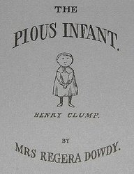

Saturday, July the 19th, 2008
back to: title, date or indexes
If, like me, you are unreasonably obsessed with the weird goings-on in the Anglican church, you might have discovered the blog being tapped out by Bishop Gene Robinson*. I am certainly pleased that I stumbled upon it, for I have learned about Saint Rumwold.
Saint Rumwold was born at King's Sutton in AD 662, the son of Saint Cyneburga and King Alchfrid. His first words, on the day he was born, were “I am a Christian”. He then asked to be baptised, and to receive Holy Communion. The next day he preached a sermon, quoting freely from Scripture. On the third day he addressed another sermon, to his parents, and then he keeled over and died. A pious infant indeed.
Possibly even more pious than Edward Gorey's Henry Clump…

*NOTE : Pansy Cradledew has asked me to point out that Bishop Gene Robinson, a gay bishop, should not be confused with Gay Bishop, the TV newsreader who sometimes presents news items about gay bishops.